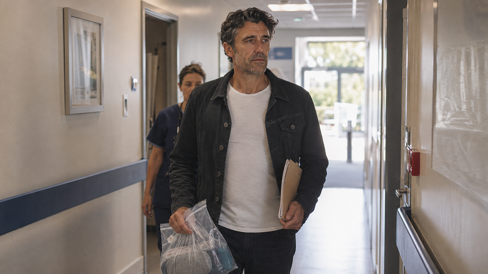
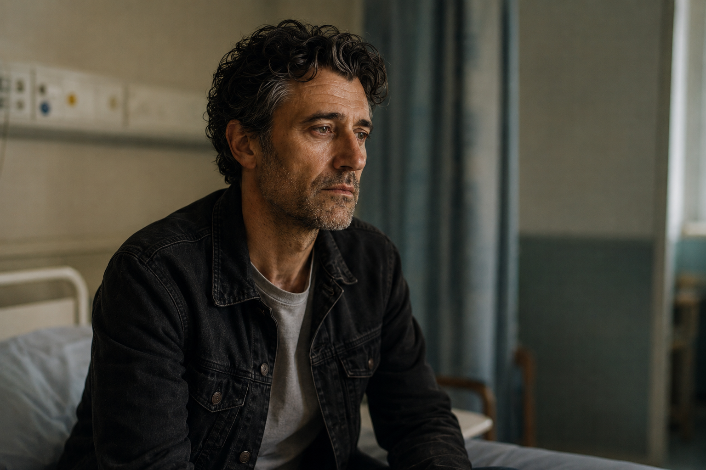
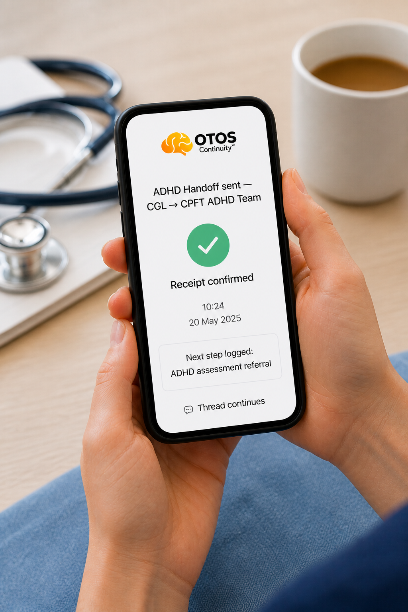

Next time we meet, I won't be your patient. I'll be your partner.
You saw me where the pathway ran out of road. I'm trying to build the road beyond that point — with the people who saw me at the bedside, not for them.
A private bedside note — not a complaint, not a proposal. NIA (Neurologically Informed Addiction) is a proposed pathway — not a recognised diagnosis — submission to the Royal College of Psychiatrists now in progress. OTOS is non-clinical infrastructure; it surfaces signals, partner teams make every decision. No NHS, CUH or CPFT endorsement is assumed or implied.
A promise I made at the bedside — and I'm keeping it.
Some of this you will remember. I came through your ward more than once, at the point where there was nowhere obvious left to send me. One of your nurses sat with me and actually got it — and that bedside moment is the reason any of this exists.
Let me be clear about what this is, and what it is not. It is not a complaint about the team or the Trust. It is not asking you to diagnose or assess ADHD, or to take on anything outside your remit. It is not asking for endorsement. It is a private note asking one simple question: could that bedside moment become a safe, easy, upstream flag for the next person?
The bedside sees the pattern before the pathway does.
People rarely arrive at hospital through an “addiction door.” They come in with a broken leg, pancreatitis, a seizure, an injury, a mental-health crisis. Then they cannot drink. Withdrawal appears. The alcohol history surfaces. Alcohol Liaison gets called — and the real story comes out at the bedside, often more honestly than it ever reaches a referral form.

And by the time someone reaches you, they have usually run the gauntlet: A&E first, then a ward, and detox somewhere beyond that. CGL hold the detox budget, but it takes time — and in the meantime the message is often “keep drinking, and wait for a nurse appointment.” For a brain self-medicating untreated ADHD, that wait is exactly where people are lost.
That makes your bedside one of the rare upstream interception points in the whole system. You meet people at the moment denial drops and the pattern is still hot — before they disappear back into the gap.

The moment someone leaves the ward is the moment the thread most often snaps.
The insight is sharpest at the bedside — and it dies at discharge, when there is nowhere upstream to send it. Earlier in my own story, this was me. The difference was never the care. It was the silence after it.
What recovery needs. What ADHD takes away.
The people you meet at the bedside are often asked, later, to recover using the exact capacities unmanaged ADHD erodes. Line them up item for item — the treatment model and the disorder point in opposite directions.
| Capacity | Unmanaged ADHD impairs | Addiction recovery requires |
|---|---|---|
| Executive function | Difficulty planning, sequencing and self-regulating | Daily planning, structure and delay of gratification |
| Focus & attention | Chronic distractibility on non-stimulating tasks | Sustained focus through long therapy and recovery work |
| Working memory | Forgets strategies, misses appointments | Retaining tools, tracking triggers, holding routines |
| Impulse control | Reflexive, immediate urges | Pausing and resisting cravings in the moment |
| Emotional regulation | Distress arrives fast and overwhelms | Tolerating distress without the substance |
| Routine & follow-through | Hard to sustain mundane routines | Repetition that rebuilds new pathways |
| Reward & arousal | Under-arousal; pull to immediate reward | A stable baseline; tolerating delayed reward |
| Neuroplastic learning | Blunted adaptation without immediate payoff | Healthy re-wiring to replace deep-seated habits |
Read it as a model, not a verdict. An explanatory framing drawn from the published account of ADHD and recovery; presentations vary and the alignment is directional — offered to show why this cohort struggles with standard recovery, not to diagnose anyone.
You did not fail me. You showed me where the route was missing.
I had been everywhere — A&E, detox, withdrawal, discharge after discharge, and at the lowest point a suicide attempt. By the time I reached your ward I needed something very specific: the right discharge wording, so a private psychiatrist could finally reassess and remedicate the ADHD underneath all of it.
That same nurse helped with exactly that — and said the truest thing anyone in the system has said to me. There was nowhere else to send me. Not because she didn't care, but because the route did not exist. She could send me to CGL and to mental health. She could not send me anywhere for the ADHD-driven addiction pattern she could clearly see.
Alcohol Liaison sees the moment. OTOS helps the thread survive it.
OTOS Continuity is a non-clinical layer. It does not diagnose, prescribe, treat or replace anyone. It surfaces signals; partner teams make every decision. Nothing changes in how Alcohol Liaison works — what changes is whether the bedside insight survives discharge.
| OTOS element | What it does | Why it matters at the bedside |
|---|---|---|
| Bedside touchpoint | Logs that Alcohol Liaison saw a possible ADHD / alcohol / self-medication pattern | Stops the insight disappearing at discharge |
| Transition receipt | Records who the person was signposted or referred to | Shows whether the next step actually existed and landed |
| Discharge follow-through | Checks whether the person stayed connected after hospital | Helps reveal silent drift after discharge |
| Drift visibility | Flags no response or no follow-through | Makes risk visible before the next crisis |
| Partner handoff | Routes learning to CGL / CRS / ADHD / GP where lawful | Prevents the bedside insight dying in isolation |
| Learning report | Summarises what happened across the cohort | Shows whether bedside identification is worth expanding |


First, make the moment visible. Later, route it faster.
First: now means visibility only. Later means possible routing, and only if it is formally governed and agreed.
Log the touchpoint.
- If a hospital presentation looks like alcohol harm plus a possible ADHD self-medication pattern, log a safe urgency flag.
- It sits right alongside your existing CGL and mental-health signposts.
- No diagnosing ADHD. No new clinical route needed before the learning can start.
Route it faster — if a pathway exists.
- If a governed pathway is later agreed, the bedside could become a front-door route into ADHD-driven addiction review.
- A future “ADHD fast-track” is a concept to explore, not a live service or a current ask.
- The decision always stays with qualified clinical teams.
One person, held across the whole team.
Your bedside is the upstream catch-point on a longer pathway. OTOS does not replace any part of it — it holds the thread between every part, so the person you saw stays visible after discharge.

Think of it as neuroplasticity for the system. Just as a treated ADHD brain can finally form new pathways, a connected service system learns too — every receipt, check-in and nudge teaches the pathway to hold the next person a little better than the last.
What OTOS is, and what it is not.
Before any conversation, the boundary should be unambiguous. This protects your team, your remit and your governance — OTOS adds a thread, never a clinical responsibility.
- × A clinical service, diagnosis tool or treatment
- × An EPR or NHS record — no record access, no write-back
- × A replacement for Alcohol Liaison or any existing service
- × Asking the bedside to diagnose or assess ADHD
- × A finished product asking for endorsement
- ✓ A non-clinical continuity layer around services that already exist
- ✓ A thread that keeps the bedside insight alive after discharge
- ✓ Grounded in NICE NG87 and RCPsych (CR235 / CR243) guidance
- ✓ Built from lived experience of this exact pathway
- ✓ A small, bounded demonstrator — built to prove pilot readiness
Turning a crisis endpoint into an upstream catch-point.
You are not being asked to carry the whole solution — only to help shape whether one easy bedside flag could work, and to tell me honestly where it would get in the way. Your judgement is what would make this practical, safe, and genuinely upstream.
The Alcohol Liaison team may be one of the earliest places where ADHD-driven addiction becomes visible enough to act on — the difference between catching the pattern here, or meeting the same person again later, as crisis.
- You see the person at the moment of truth, while the pattern is still hot.
- You hear the story more honestly than any referral form ever captures.
- You already know who has nowhere useful to go next — because you have stood in that gap.
I'm not asking you to approve OTOS, endorse NIA, commit to a pilot or take on new responsibility. I would value a private 30-minute conversation about whether the Alcohol Liaison bedside moment could help shape a small, safe, bounded ADHD-driven addiction continuity-learning route. Just your clinical and bedside judgement in the room.
OTOS does not diagnose, prescribe, treat, replace services or make clinical decisions. OTOS surfaces signals; partner teams make the decisions. No endorsement is assumed or implied. Any “fast-track” routing is a future hypothesis, not a live service. Any work would be subject to governance and qualified clinical leadership.
dean@otos.life · 07585 899 235